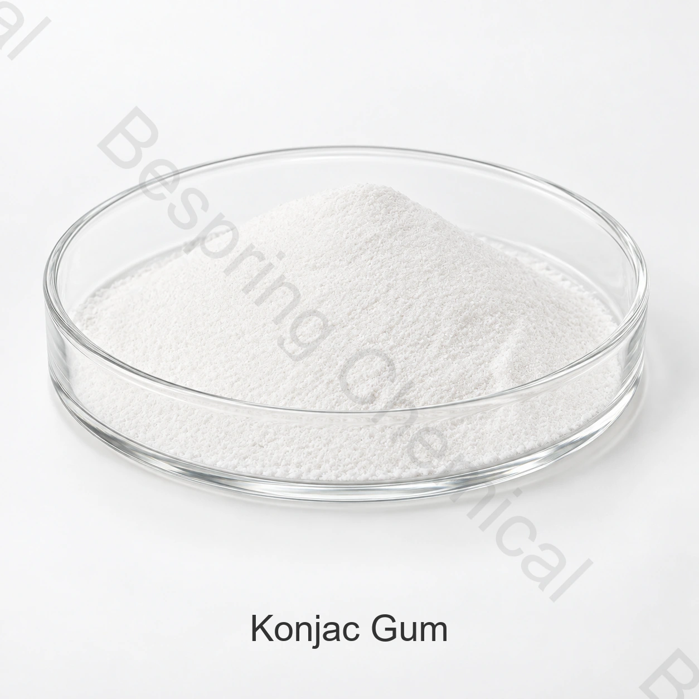

منتجات اللحوم
تُقيَّم الرطوبة والتماسك والقوام والتوافق مع الأملاح والغرويات الأخرى.
مكوّن غذائي · غلوكومانان · INS 425
صمغ الكونجاك مكوّن غني بالغلوكومانان من نبات الكونجاك، يُقيَّم للتكثيف وربط الماء وتكوين الهلام في أغذية مناسبة. تُحدد درجة التنقية واللزوجة وحجم الجسيمات وشروط الاستخدام عند الشراء.
اذكر الغذاء المقصود والحدود المستهدفة وطرق الاختبار والكمية والوجهة.

نبذة عن المنتج
يعرف JECFA دقيق الكونجاك برقم CAS 37220-17-0 ورقم INS 425. الغلوكومانان بوليمر، وليس جزيئاً صغيراً ذا وزن جزيئي ثابت.
تُختار الدرجة بحسب الغذاء المقصود وظروف التصنيع ومتطلبات السوق، وتُقارن نتائج شهادة تحليل الدفعة بالمواصفة المتفق عليها.
مجالات الاستخدام
تُقيَّم التطبيقات في الوصفة والعملية الفعليتين، ضمن شروط الاستخدام والوسم في سوق الوجهة.
تُقيَّم الرطوبة والتماسك والقوام والتوافق مع الأملاح والغرويات الأخرى.
تُختبر اللزوجة والتعليق والصفاء والقوام في التركيبة الفعلية.
تُحدد النقاوة والدرجة ونظام تكوين الهلام بحسب المنتج وشروط السوق.
يُختبر القوام وانفصال الماء وثبات التخزين في الوصفة الكاملة.
المواصفات الفنية
القيم أدناه مواصفات تجارية مرجعية، وليست نتائج دفعة أو إثبات مطابقة معيار بعينه. تُحدد حدود القبول وطرق القياس وأساس النتائج في مواصفة الشراء.
| عنصر الاختبار | BPKJ3 | BPKJ5 | BPKJ7 | BPKJ9 | BPKJ11 | BPKJ13 |
|---|---|---|---|---|---|---|
| حجم الجسيمات، مرور 90 في المائة | ≥120 | ≥120 | ≥120 | ≥120 | ≥120 | ≥120 |
| غلوكومانان، أساس جاف | ≥70% | ≥75% | ≥80% | ≥85% | ≥85% | ≥90% |
| اللزوجة | 000 15 (الوحدة حسب المواصفة المعتمدة) | 000 22 (الوحدة حسب المواصفة المعتمدة) | 000 25 (الوحدة حسب المواصفة المعتمدة) | 000 30 (الوحدة حسب المواصفة المعتمدة) | 000 32 (الوحدة حسب المواصفة المعتمدة) | 000 36 (الوحدة حسب المواصفة المعتمدة) |
| الرطوبة | ≤12.0% | ≤11.0% | ≤10.0% | ≤10.0% | ≤10.0% | ≤10.0% |
| الرماد | ≤4.5% | ≤4.5% | ≤3.0% | ≤3.0% | ≤3.0% | ≤3.0% |
| الرصاص (Pb) | 0.8 ملغم/كغم | 0.8 ملغم/كغم | 0.8 ملغم/كغم | 0.8 ملغم/كغم | 0.8 ملغم/كغم | 0.8 ملغم/كغم |
| زرنيخ (As) | ‘3.0 ملغم/كغم | ‘3.0 ملغم/كغم | ‘3.0 ملغم/كغم | ‘3.0 ملغم/كغم | ‘3.0 ملغم/كغم | ‘3.0 ملغم/كغم |
| ثاني أكسيد الكبريت | ٠٩٠٠ ملغم/كغم | ٠٩٠٠ ملغم/كغم | ٠٩٠٠ ملغم/كغم | ٠٩٠٠ ملغم/كغم | ٠٩٠٠ ملغم/كغم | ٠٩٠٠ ملغم/كغم |
| pH | 5–7 | 5–7 | 5–7 | 5–7 | 5–7 | 5–7 |
| مجموع عدد اللوحات | ≤5,000 | ≤5,000 | ≤5,000 | ≤5,000 | ≤5,000 | ≤5,000 |
| الخمائر والعفن | ≤100 | ≤100 | ≤100 | ≤100 | ≤100 | ≤100 |
أساس المقارنة والقبول: تُحدد وحدة اللزوجة وتركيز المحلول ودرجة الحرارة والزمن وطريقة القياس في المواصفة التعاقدية. لا تُفسر الأرقام ذات الرموز غير المحددة كحدود قبول معتمدة، بما فيها الزرنيخ وثاني أكسيد الكبريت. تشمل مقارنة الدرجة محتوى الغلوكومانان وحجم الجسيمات وليس الصيغة C6H10O5 وحدها.
دعم التأهيل
اطلب المواصفة الحالية وورقة البيانات الفنية (TDS) وصحيفة بيانات السلامة (SDS) ونموذج COA، ثم شهادة تحليل الدفعة وطرق الاختبار.
تُطلب مستندات HACCP وحلال وكوشر وISO وفق نطاقها الساري للمنتج والمصدر وموقع التصنيع المعني.
راجع سجل دقيق الكونجاك من FAO/JECFA وتطبيق قواعد سوق المقصد على حدة.
التخزين والمناولة
أسئلة المشتري
صمغ الكونجاك مكوّن غني بالغلوكومانان من نبات الكونجاك، يُقيَّم للتكثيف وربط الماء وتكوين الهلام في أغذية مناسبة. تُحدد درجة التنقية واللزوجة وحجم الجسيمات وشروط الاستخدام عند الشراء.
التعبئة المزودة هي 25 كيلوغراماً من حقيبة الورق، وكمية الطلب الأدنى المرجعي هي 500 كيلوغرام.
اطلب المواصفة الحالية وورقة البيانات الفنية (TDS) وصحيفة بيانات السلامة (SDS) ونموذج COA، ثم شهادة تحليل الدفعة وطرق الاختبار.
قدم التطبيق الغذائي المقصود، المواصفات المستهدفة، طرق الاختبار، الكمية، التعبئة، الوجهة، تفضيل المنصات، وتاريخ التسليم المطلوب.
المكونات ذات الصلة
راجع الهوية، المواصفات، التطبيقات واعتبارات التوريد.
راجع الهوية، المواصفات، التطبيقات واعتبارات التوريد.
راجع الهوية، المواصفات، التطبيقات واعتبارات التوريد.
توريد وفق المواصفات المتفق عليها
شارك التطبيق، الدرجة المستهدفة والمواصفات، الكمية، التعبئة، الوجهة والمستندات المطلوبة.